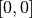
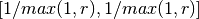

Extended filenames¶
Extended filenames are an interesting feature of OTB. With them, it is possible to control several aspects of the behavior of OTB in the OTB-Applications or in our own C++ applications. Historically this feature was designed to facilitate how geo-referencing information was handled.
Indeed, there are multiple ways to define geo-referencing information. For instance, one can use a geographic transform, a cartographic projection, or a sensor model with RPC coefficients. A single image may contain several of these elements, such as in the “ortho-ready” products: this is a type of product that is still in sensor geometry (the sensor model is supplied with the image) but it also contains an approximative geographic transform that can be used to have a quick estimate of the image localisation. For instance, your product may contain a “.TIF” file for the image, along with a “.RPB” file that contains the sensor model coefficients and an “.IMD” file that contains a cartographic projection.
This case leads to the following question: which geo-referencing element should be used when the image is opened in OTB. In fact, it depends on the user’s requirements. For an orthorectification application, the sensor model must be used. In order to specify which information should be skipped, a syntax of extended filenames has been developed for both reading and writing.
Since the development of this feature, we have extended this mechanism for other aspects. This includes band or overview selection in reader part or support create option of GDAL in writer part. The reader and writer extended filename support is based on the same syntax, only the options are different. To benefit from the extended filename mechanism, the following syntax should be used:
Path/Image.ext?&key1=<value1>&key2=<value2>
Note that you’ll probably need to “quote” the filename, especially if calling applications from the bash command line.
Reader options¶
&geom=<path/filename.geom>
- Contains the filename of a valid geom file
- Use the content of the specified geom file instead of image-embedded geometric information
- empty by default, use the image-embedded information if available
&sdataidx=<(int)idx>
- Select the sub-dataset to read
- 0 by default
&resol=<(int)resolution factor>
- Select the JPEG2000 sub-resolution image to read
- 0 by default
&bands=r1,r2,...,rn
- Select a subset of bands from the input image
- The syntax is inspired by the Python indexing syntax with
bands=r1,r2,r3,…,rn where each ri is a band range that can be:
- a single index (1-based) :
2means the second band-1means last band
- or a range of bands :
3:means from the third band until the last band:-2means the first band up until the penultimate band2:4means bands 2,3 and 4
- a single index (1-based) :
- empty by default (all bands are read from the input image)
&skipcarto=<(bool)true>
- Skip the cartographic information
- Clears the projectionref, set the origin to  and the
spacing to  where
 is the resolution
factor.
is the resolution
factor. - Keeps the keyword list
- false by default
&skipgeom=<(bool)true>
- Skip the geometric information
- Clears the keyword list
- Keeps the projectionref and the origin/spacing information
- false by default.
&skiprpctag=<(bool)true>
- Skip the reading of internal RPC tags (see [sec:TypesofSensorModels] for details)
- false by default.
Writer options¶
&writegeom=<(bool)false>
- To activate writing of external geom file
- true by default
&writerpctags=<(bool)true>
- To activate writing of RPC tags in TIFF files
- false by default
&gdal:co:<GDALKEY>=<VALUE>
- To specify a GDAL creation option
- For GDAL creation option information, see the dedicated GDAL documentation for each driver. For example, you can find here the information about the GeoTiff create options
- None by default
&streaming:type=<VALUE>
- Activates configuration of streaming through extended filenames
- Override any previous configuration of streaming
- Allows to configure the kind of streaming to perform
- Available values are:
- auto: tiled or stripped streaming mode chosen automatically depending on TileHint read from input files
- tiled: tiled streaming mode
- stripped: stripped streaming mode
- none: explicitly deactivate streaming
- Not set by default
&streaming:sizemode=<VALUE>
- Provides the option to choose how the size of the streaming pieces is computed
- Available values are:
- auto: size is estimated from the available memory setting by evaluating pipeline memory print
- height: size is set by setting height of strips or tiles
- nbsplits: size is computed from a given number of splits
- Default is auto
&streaming:sizevalue=<VALUE>
- Parameter for size of streaming pieces computation
- Value is :
- if sizemode=auto: available memory in Mb
- if sizemode=height: height of the strip or tile in pixels
- if sizemode=nbsplits: number of requested splits for streaming
- If not provided, the default value is set to 0 and results in different behaviours depending on sizemode (if set to height or nbsplits, streaming is deactivated, if set to auto, value is fetched from configuration or cmake configuration file)
&box=<startx>:<starty>:<sizex>:<sizey>
- User defined parameters of output image region
- The region must be set with 4 unsigned integers (the separator
used is the colon ’:’). Values are:
- startx: first index on X (starting with 0)
- starty: first index on Y (starting with 0)
- sizex: size along X
- sizey: size along Y
- The definition of the region follows the same convention as itk::Region definition in C++. A region is defined by two classes: the itk::Index and itk::Size classes. The origin of the region within the image with which it is associated is defined by Index
&bands=r1,r2,...,rn
- Select a subset of bands from the output image
- The syntax is inspired by Python indexing syntax with
bands=r1,r2,r3,…,rn where each ri is a band range that can be :
- a single index (1-based) :
2means 2nd band-1means last band
- or a range of bands :
3:means 3rd band until the last one:-2means the first bands until the second to last2:4means bands 2,3 and 4
- a single index (1-based) :
- Empty by default (all bands are write from the output image)
The available syntax for boolean options are:
- ON, On, on, true, True, 1 are available for setting a ’true’ boolean value
- OFF, Off, off, false, False, 0 are available for setting a ’false’ boolean value
&nodata=(double) value / [int:double, int:double ...]
- This options allows one to set specific nodata values for all or selected bands. The nodata values can be set in two ways: either using a simple scalar value or band,value pairs. OTB will select either one of them depending on the type of nodata value string specified.
- If the value is scalar (without bandindex), it will be applied only to the first band of the image.
- If the value is given as “bandindex:value” pair separated by a “:” then the nodata value is applied to only those selected band.
- By default OTB will not alter any existing nodata value.
- The following examples illustrate the above-mentioned points:
- Scalar value syntax : “image_filename?&nodata=-999” -> nodata value equal to -999 will be assigned to all bands
- “Band/Value pair” syntax: “image_filename?&nodata=0:-999,1:255,2:254” -> nodata value corresponds to pixels with values [-999,255,254]
- It is important to note that the band numbering in the nodata writer option follows the GDAL convention and starts at 1.
OGR DataSource options¶
We extended this process to OGR DataSource. There are three different types of options: open, creation and layer creation, which come directly from the GDAL API. In order to use them, one just needs to specify the family that the option is from.
For open option :
&gdal:oo:<GDALKEY>=<VALUE>
For creation option :
&gdal:co:<GDALKEY>=<VALUE>
For layer creation option :
&gdal:lco:<GDALKEY>=<VALUE>
Examples¶
Some examples are provided below:
- Write a file with blockSize equal to 256 and with DEFLATE compression
$ otbcli_DynamicConvert -in OTB-Data/Examples/QB_1_ortho.tif -out "/tmp/example1.tif?&gdal:co:TILED=YES&gdal:co:COMPRESS=DEFLATE"
- Process only first band from a file
$ otbcli_DynamicConvert -in "OTB-Data/Examples/QB_1_ortho.tif?&bands=1" -out /tmp/example2.tif